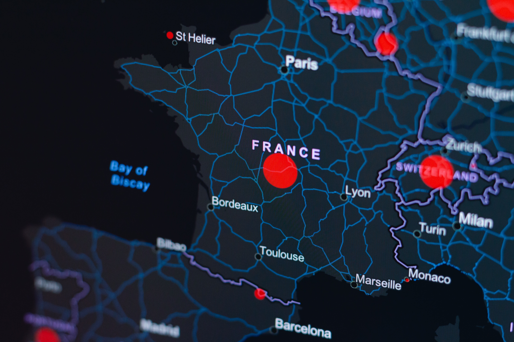
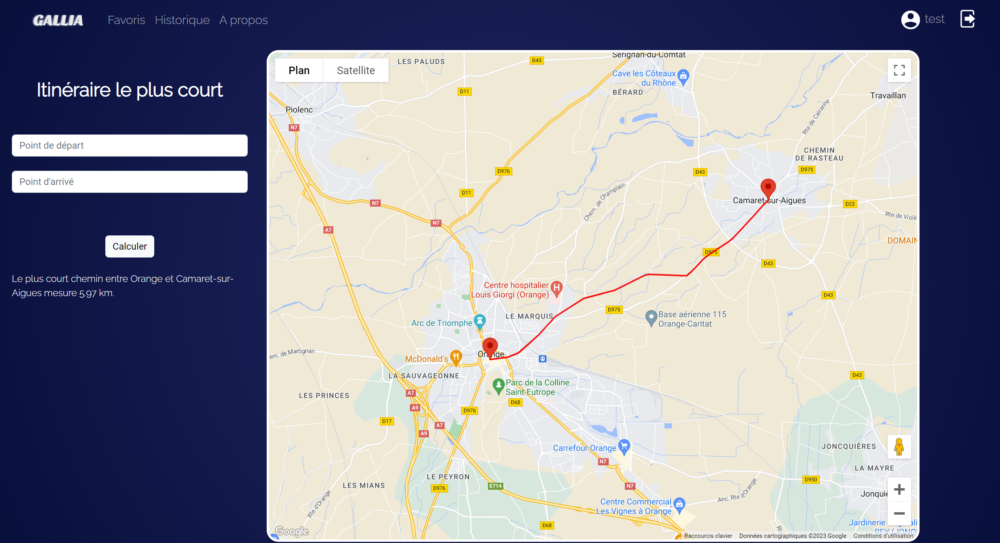

Contexte

Sujet : Optimisation d'une application Web pour calculer l'itinéraire le plus court entre 2 communes
Objectif : Améliorer les performances, la qualité logicielle, l'ergonomie, la sécurité et le bilan écologique d'une application Web existante qui calcule l'itinéraire le plus court entre 2 communes en utilisant le réseau routier français Route500 fourni par l'IGN.
Code existant : L'application mise à disposition prend environ 15 secondes pour parcourir 300 mètres.
Base de données : Le projet utilise PostgreSQL avec l'extension PostGIS pour manipuler des données géométriques. Les données géométriques SQL sont au format latitude/longitude utilisées par les GPS, OpenStreetMap, ...
Mesure/Optimisation : L'analyse des performances du PHP sera effectuée à l'aide de Xdebug pour améliorer les performances de l'application. D'autres mesures seront également prises pour évaluer et améliorer la qualité logicielle, l'ergonomie, la sécurité et le bilan écologique de l'application.
Le but du projet est donc d'optimiser l'application existante pour réduire le temps de calcul, améliorer la qualité et la sécurité du code, ajouter de nouvelles fonctionnalités, améliorer l'expérience utilisateur et réduire l'impact écologique de l'application.
Analyse
Lors de ce projet d'amélioration d'une application Web existante, j'ai pu acquérir des compétences techniques importantes en informatique.
J'ai notamment manipulé des données géométriques à l'aide de PostgreSQL et de l'extension PostGIS pour stocker et traiter des coordonnées de latitude et de longitude.
J'ai ensuite optimisé les performances de l'application en identifiant et corrigeant les parties lentes dans le code à l'aide de Xdebug. J'ai également amélioré la qualité du code en identifiant et en corrigeant les problèmes de qualité, pour garantir un code propre, lisible et facilement maintenable.
J'ai également ajouté de nouvelles fonctionnalités pour améliorer l'expérience utilisateur en concevant une interface utilisateur intuitive. J'ai pris en compte la sécurité de l'application en mettant en place des mesures pour protéger les données et éviter les failles de sécurité.
Enfin, j'ai pris en compte l'impact écologique de l'application en réduisant sa consommation d'énergie en utilisant des technologies économes en énergie et en limitant la quantité de données échangées.
Dans l'ensemble, ce projet m'a permis de développer une meilleure compréhension des différentes dimensions d'un projet informatique. Que ce soit en termes de stockage et de traitement de données, d'optimisation des performances, d'amélioration de la qualité du code, de conception de l'interface utilisateur et de l'impact environnemental des technologies. Ces compétences sont pour moi essentiel pour réussir dans le domaine de l'informatique et m'aideront dans mon prochain stage.

Améliorations

Après avoir réalisé ce projet, j’ai plusieurs pistes d'améliorations pour améliorer l'expérience utilisateur.
On peut ajouter un système de géocodage inversé qui permet aux utilisateurs de trouver l'adresse correspondante à une coordonnée géographique. Cela peut rendre l'application plus pratique pour l'utilisateur.
On peut aussi développer une application mobile qui reprend les fonctionnalités de l'application Web que nous avons créée. Cela permettra aux utilisateurs de l'utiliser partout où ils se trouvent.